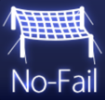
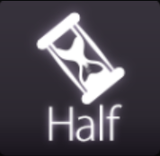
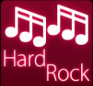
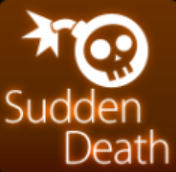
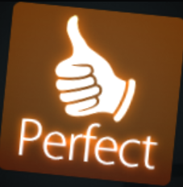
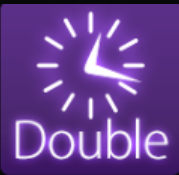
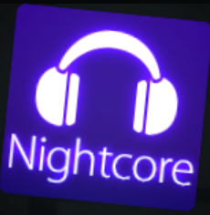
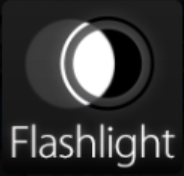
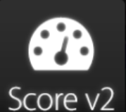

In Osu gibt es viele verschiedene Mods, die die Schwierigkeit erhöhen,
aber auch vereinfachen können.
Vereinfachen
Easy (EZ): Beim Ez-Mod erscheinen die Objekte langsamer und man stirbt
auch nicht so schnell. Jedoch finden die Meisten, dass es dadurch nicht einfacher,
sondern eher schwieriger wird, da man mehr sehen kann als man eigetnlich braucht.

No Fail (NF): Wie der Name schon sagt, kann man hier nicht sterben. Alles
andere bleibt gleich und man betnutzt es um zu schwierige Levels zu spielen, die
man sonst nicht schaffen würde.

Half Time (HT): Hier verrät es der Name auch schon, den es verlangsamt das
ganze Lied, aber es nicht auf 0.5x Geschwindigkeit gesetzt, sondern auf 0.75x.
Verschweren:

Hard Rock (HR): Hard Rock ist eines der einfachsten, aber gleichzeitig auch eines
der schwierigsten Mods, da es alles ein bisschen schwerer macht. Geschwindigkeit,
Erscheinungszeit, grösse der Objekte, Abstände der Objekte und so weiter.

Sudden Death (SD): Dieser Mod macht nur, dass wenn man eine Note verfehlt, dass man
dann direkt stirbt und von vorne anfängt.

Perfect (PF): Perfect ist eine erweiterung von Sudden Death, bei dem man stirbt, wenn
nicht alle klicks perfekt sind.

Double Time (DT): DT ist das Gegenteil von HT, aber auch hier wird die Geschwindigkeit
nicht um genau 2x erhöht, sondern nur um 1.5x.

Nightcore (NC): Nightcore ist genau das gleiche wie Double Time, aber die Lieder werden
im Musik Genre Nightcore abgespielt.
Hidden (HD): Dieser Mod macht die Objekte immer mehr durchsichtiger, bevor sie kurz vor
dem Klick ganz verschwinden.

Flashlight (FL): Beim FL-Mod wird die Sicht des Spielers immer kleiner. Das heisst, dass
der Sichtradius um den Cursor immer kleiner wird, bis man am schluss fast gar nichts mehr
sieht.
Special:
Relax (RL): Bei diesem Mod wird das Game alle Objekte anklicken. Das heisst, dass man nur
noch die Maus oder den Stift auf dem Grafiktablett bewegen muss, was gut für Übung sein kann.
Autopilot (AP): AP ist das genaue Gegenteil von RL, den hier wir der Cursor automatisch bewegt
und man muss nur noch im Rhythmus klicken, was aber nicht unbedingt einfacher ist.
Spun Out (SO): Hier werden die Spinners automatisch ausgeführt. Aber dadurch das dieser meistens
langsamer ist, als der Spieler selber es spinnen kann, lohnt der sich nicht wirklich.
Auto (AT): Auto ist da, um mal eine perfekte Durchführung anzuschauen. Der Spieler selbst muss
hier gar nichts tun und kann sich auf die Stellen konzentrieren, die man nicht so gut kann.

ScoreV2 (SV2): Dies ist ein Score-System, das noch nicht offiziell zählt, aber es vielleicht, in
der Zukunft mal sein wird. Der Mod ist zwar Spielbar, aber zählt nicht zu der aktuellen Rangliste
dazu und am Grundspielprinzip ändert es auch nichts.